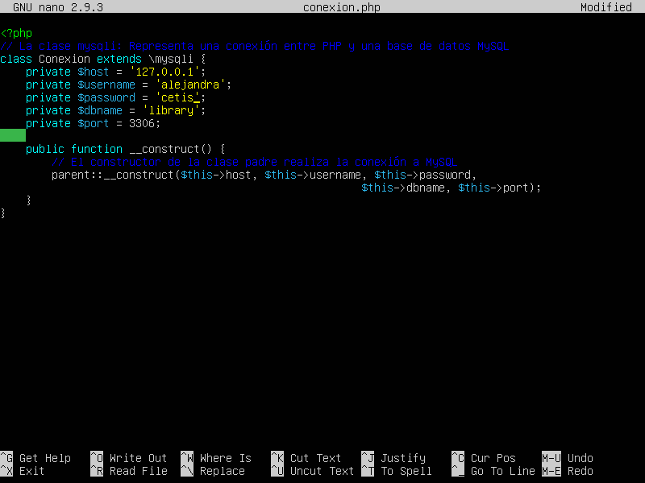

Para poder conectar MySQL necesitamos permisos de administrador, para obtener los permisos debemos insertar el comando siguiente
/library.com/db$ sudo -i
Ya que tengamos permisos del root ejecutamos el comando mysql, ya dentro de mysql pondremos el comando source /var/www/html/, http://library.com/db/library.sql", library.com/db/library.sql, ya tenemos la base de datos, tenemos que poner el comando show databases; y nos mostrara las bases de datos que existen.
Para crear un usuario se utiliza el comando

Tenemos que darle permisos de administrador al usuario para poder editar las bases de datos con el comando
Para clonar el repositorio tenemos que movernos a la carpeta html con el comando cd/var/www/html, ya que nos movamos de carpeta tenemos que insertar el siguiente comando

Ya que este clonado el repositorio tendremos que cambiarle el nombre ejecutando el comando

Para cambiar el usuario y contraseña ponemos el siguiente comando

En la siguiente ventana tenemos que editar el usuario y la contraseña.
Para poner en uso la base de datos tenemos que poner el comando

Lo siguiente es poner el comando sudo nano library.sql, al entrar aparecera un editor de archivos, lo siguiente sera poner USE `library`; despues damos "ctrl + o" y "ctrl + x"
Al salir de nano ejecutamos el comando cat library.sql, para que se guarden los cambios